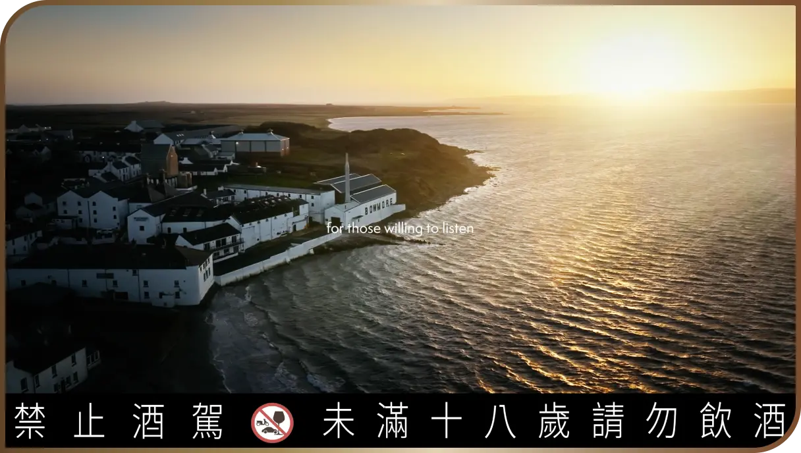
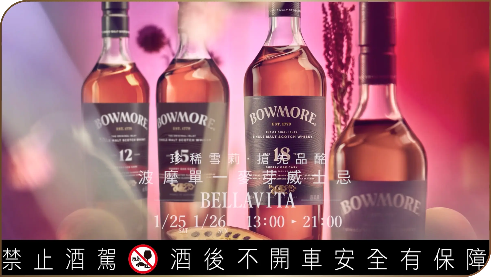
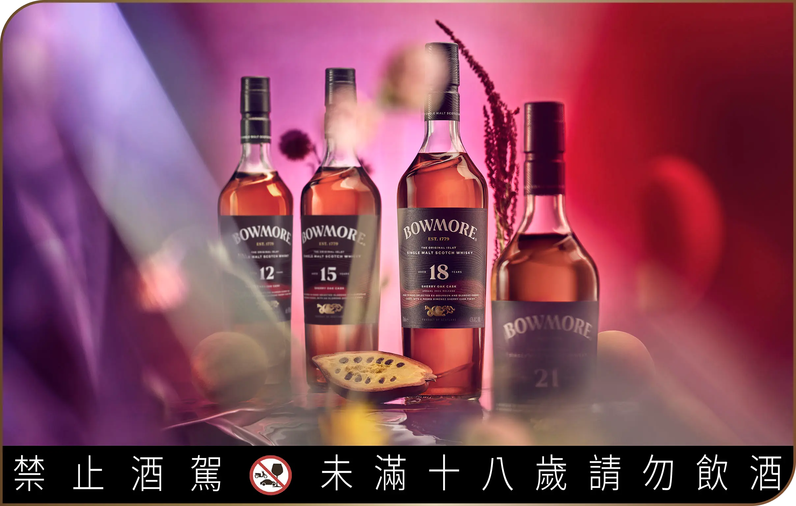

始建於 1779 年的波摩酒廠，是艾雷島上最古老的酒廠，除了擁有世界上最古老的威士忌熟成酒窖「一號酒窖 (Vault No.1)」，至今累積了245年的製酒經驗，仍忠誠地遵循古法，以地板發麥、傳統木製鏟翻麥，全程人工監控操作，而與海洋僅一牆之隔、低於海洋水平面下的一號酒窖也在245年來不間斷的海潮拍打下，熟成酒液在橡木桶中渡過悠長沉靜的歲月，呼吸著海洋與陸地交會的濕氣與海風，交織成豐滿甜美的波摩單一麥芽蘇格蘭威士忌，在威士忌迷心中有著強烈不可取代的地位。

波摩酒廠
世界上最古老的
威士忌熟成酒窖
ALL-NEW
全 新
雪莉系列介紹
雪莉系列
介紹
波摩酒廠秉持超過245年的傳統工藝，融合頂級雪莉橡木桶，推出全新「雪莉桶系列」 將艾雷島的獨特風情與雪莉桶的濃烈熱情完美融合，繼承了品牌極富表現力的風格並將進一步升級 波摩全新雪莉桶系列的發行，展演了頂級西班牙雪莉橡木桶在塑造威士忌的風味及多層次深度中扮演的關鍵角色，同時更彰顯了波摩威士忌的標誌性風格。全新雪莉桶系列包含12年、15年、18年及21年的品項。
透過兩種初次西班牙橡木雪莉桶的過桶熟成、將成熟西洋梨及烘烤熱帶水果的香甜風味與隱含的煙燻及黑巧克力尾韻完美結合，呈現令人沉浸其中的味覺演出。
相比其它蘇格蘭巨型蒸餾廠， 波摩酒廠的年產量相對稀少，也讓波摩得以更專注致力於傳統釀酒工藝，使用高比例來自地板發麥的麥芽、進行更長時數發酵
最後將蒸餾新酒放入僅占酒廠8%庫存的嚴選西班牙雪莉桶進行陳年。 品飲波摩雪莉系列，感受這超過245年的波摩蘇格蘭單一麥芽酒廠獻給當代威士忌愛好者的波瀾之境。
使用雪莉橡木桶熟成是單一麥芽蘇格蘭威士忌的與眾不同之處。而其價值來自雪莉橡木桶熟成創造出豐富的風味，加上世界上一些頂級威士忌都是在雪莉橡木桶熟成 - 例如 Black Bowmore。雪莉橡木桶熟成特別適合波摩酒廠的特色 – 波摩的煙燻和礦物風味與雪莉酒完美結合，釀造出濃郁、甜美的威士忌
這四款威士忌各自捕捉了不同層次的風味，以令人驚豔的豐富深度與層次凸顯出波摩層層堆疊風味的能力。

ALL-NEW
全 新
包裝設計
全新包裝的酒瓶設計，源自於波摩酒液本身的表現力和層次感 黑色浮雕的線條設計，呈現出每款波摩單一麥芽威士忌的多層次風味 而大膽的紅色漩渦則代表了珍稀的雪莉橡木桶熟成。
雪莉桶系列的所有酒款都有波摩酒廠全新的海龍設計，向艾雷島當地的海龍傳說Kranna Dubh致敬。 據說 Kranna Dubh 是住在 Loch Indaal 的海龍，這隻迷人、會變形的怪獸從深海中捲起神秘的力量 將艾雷島超越感官的魅力與全世界連結在一起，也為波摩酒廠注入了全新生命，展現出面對未來的強大信念。 海龍是 波摩酒廠對於傳統製酒工藝的堅持 以及 最高威士忌品質的追求 的精神標誌。

EXPERIENCE
探 索
海龍城窖
誠摯邀請你跟著波摩海龍來到限時打造的海龍城窖，探索艾雷島神秘 海龍保護的寶藏波摩，感受品牌所帶來的波瀾之境。
DATE活動日期
2025 / 1 / 25 (六)
2025 / 1 / 26 (日)
TIME活動時間
13:00-21:00
DATE活動地點
BELLAVITA 1F Plaza
個人資料保護免責聲明
感謝您參加 [Beam Suntory威士忌愛好會集點及延伸活動]，以下為個人資料蒐集告知暨同意事項，在您提供個人資料予本公司前，請充分閱讀下列事項，如您參加本活動並提供個人資料，即視為您已充分閱讀、瞭解並同意以下之相關事項：
一、告知事項：
依據個人資料保護法第八條等相關規定，明列以下告知事項
1. 個人資料蒐集單位：賓三得利股份有限公司(以下稱本公司)。
2. 蒐集之目的：於本公司及關係企業業務經營、辦理行銷活動、消費者或客戶管理與服務、調查統計或研究分析、客服作業、品酒會、廣告行銷、品牌推廣、特別活動通知、理性飲酒推廣事項、抽獎活動、類似契約或其他法律關係等業務必要範圍內為蒐集、處理、利用及國際傳輸。
3. 個人資料之類別：包括個人資料中之識別類（例如辨識個人者中之姓名、住址、聯絡電話、手機號碼、電子信箱、年齡等）、特徵類（如個人描述、身體描述、習慣）、生活品味、其他各類資訊（如未分類之資料）等直接或間接得識別您個人之資料。
4. 個人資料利用對象：本公司及關係企業、本公司所屬集團及提供相關活動、服務或業務之第三人或業務往來之機構（包含本公司或相關企業委託提供委外服務之機構），以及依法令得要求本公司提供個人資料之對象，均可能蒐集、處理、利用及以國際傳輸之方式使用您的個人資訊。
5. 個人資料利用方式、期間及地區：為執行上述特定目的所提供之個人資料，於特定目的存續期間及法令規定之期限內，以有利於達成前述特定目的之方式（包括但不限於紙本、電子文件、電話、簡訊、電子郵件、通訊軟體傳輸或資料庫），於中華民國境內、境外及法令許可之範圍內加以蒐集、處理、利用及國際傳輸。
6. 依個人資料保護法第三條規定得行使之權利及方式：您可依照個人資料保護法第三條規定，就您的個人資料向本公司提出申請，以查詢、閱覽、製給複製本；或補充／更正、請求停止蒐集、處理、利用或刪除個人資料內容之一部或全部（註：個人資料保護法第十四條規定，本活動參與者申請查詢、閱覽、製給複製本時，本公司將可能酌收您閱覽或製給複製本之必要成本費用），且您於行使前開權利時，應符合個人資料保護法規定之相關要件。
二、當您填寫個人資料後，以任何方式交由至本公司收執時，均視為您已知悉並同意本公司有蒐集、處理或利用您個人資料之效果，並同意本公司得將您所填寫之個人資料，供本公司於辦理本活動之特定目的必要範圍內為蒐集、處理、利用及國際傳輸您的個人資料。
三、您得自由選擇是否提供相關個人資料及類別，惟您所拒絕提供之個人資料及類別，如果是辦理業務審核或活動所需之資料，本公司可能無法進行必要之業務審核或您將喪失參與本公司辦理之各項活動之權益，敬請見諒。